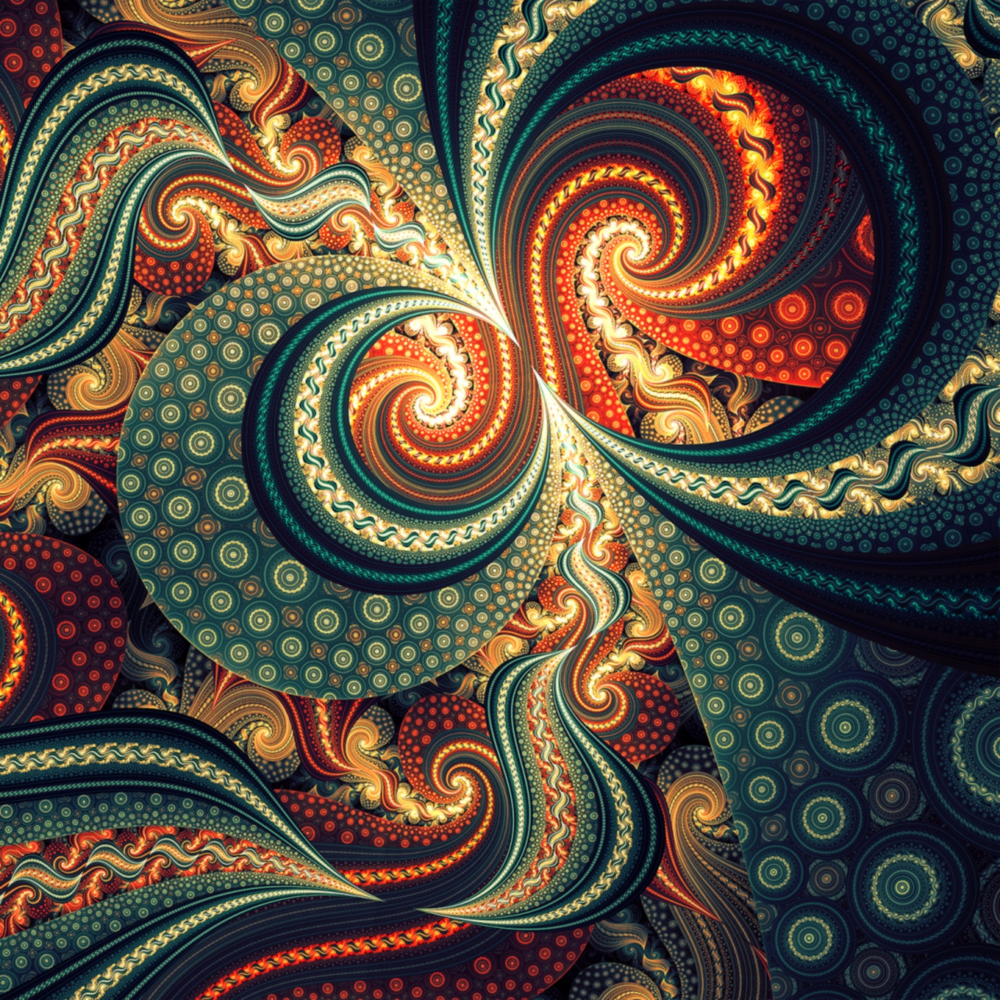
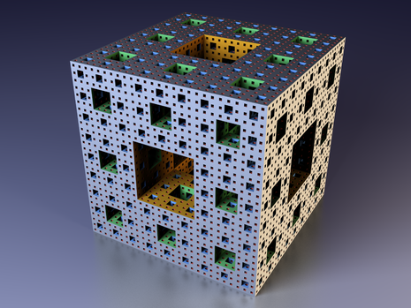
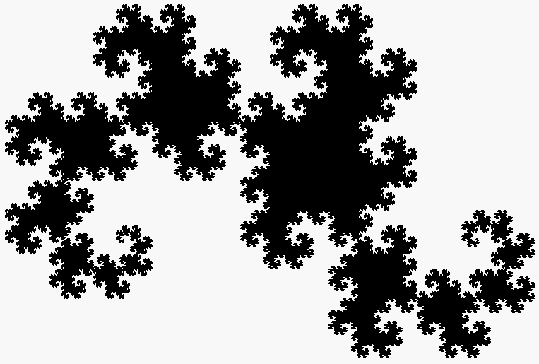

"Norii nu sunt sfere, muntii nu sunt conuri, liniile de coasta nu sunt cercui,
iar scoarta copacilor nu este neteda si nici fulgerul nu cade în linii drepte."
Benoit Mandelbrot
Scurtă intorducere în minunata lume a fractalilor
Se spune că „limbajul universului” este matematica și că tot ce există pe Pământ poate fi descris cu ajutorul
ei.
Oamenii au încercat dintotdeauna să-și explice universul prin intermediul tiparelor, pe care savanții le-au
denumit fractali în natură.
Aceste tipare sunt cel mai bine reflectate de formele geometrice, simboluri care exprimă esența celor mai
complexe
adevăruri. Fractalii pot fi întâlniți peste tot în lumea vie – în forma plantelor și a animalelor – și creează o
simetrie perfectă în tot ce ne înconjoară.
Geometria fractală este o matematică în care liniile drepete pur și simplu nu există.
Și natura este un loc în care linia drepată este o excepție.
Dacă am vrea să știm, de exemplu, care este lungimea liniei de coastă a Mării Britanii, am spune, probabil,
câteva
mii sau milioane de kilometrii. De fapt, această coastă este infinit de lungă. Acest lucru sună oarecum ciudat,
dar suntem atât de obișnuiți să măsurăm distanțele în linii drepte încât uităm cât de aproximată este această
procedură.
Dacă am merge de-a lungul plajei de coastă timp de câteva minute, am constata cu surpindere că limita exactă
dintre apă și pământ poate fi foarte greu delimitată. Orice distanță am lua în considerare, prin studierea doar
unei frcțiuni din aceasta, am observa cp noile forme obținute determină ca fracțiunea respectivă să devină tot
mai
lungă, un fenomen care poate continua la nesfârșit, găsind de fiecare dată noi forme care extind lungimeam
limitei
dintre pământ și apă. În realitate, limita dintre pământ și apă se poate curba ușor și dacă privim cu atenție
pietrele și nisupul, devine evident faptul cp sute de mici denivelări dau impresia unei suprafețe care pare să
țeasă această limită, după un tipar aparent aleator. Si, de fapt, există chiar și mai multe denivelări dacă
ne-am
uita la microscop.
Această proprietate este întâlnită peste tot în natură, variind de la dimensiunile atomice până la dimensiunea
întregului univers. Aceasta este esența GEOMETRIEI FRACTALE.

Fig.1 - Imagine din mulțimea setului Mandelbrot
Minunata istorie a fractalilor
Încă din cele mai vechi timpuri, oamenii au încercat să-și explice anumite fenomene, prin intermediul unor
modele,
care la început au fost simpliste, dar aproximând natura. Odată cu evoluția științei, modelele devin tot mai
complexe și se apropie tot mai mult de fenomenele reale observate. Astfel, geometria clasică, euclidiană,
lucrează
cu figuri geometrice simple. Apariția geometriilor neeuclidiene (ai căror fondatori au fost Lobacevski și
Bolyai)
a condus la o reconsiderare a vechilor teorii.
Matematica din spatele fractalilor a apărut în secolul 17, când filosoful Gottfried Leibniz a considerat
autosimilaritatea recursivă (deși greșise gândindu-se că numai liniile drepte sunt autosimilare în acest
sens).
În a doua parte a secolului al XIX-lea și începutul secolului XX, anumiți matematicieni semnalează existența
unor
entități geometrice excepționale, fără nicio asemănare cu figurile și corpurile studiate până atunci. Printre
acestea se numără curba lui Koch, o curbă de lungime infinită ce limitează o arie finită și care nu admite
tangentă în niciun punct al acesteia și dimensiunea Hausdorff, obiect geometric care nu are dimensiunea
întreagă.
În 1872 a apărut o funcție al cărei grafic este considerat azi fractal, când Karl Weierstrass a dat un exemplu
de
funcție cu proprietatea că este continuă, dar nediferențiabilă. În 1904, Helge von Koch, nesatisfăcut de
definiția
abstractă și analitică a lui Weierstrass, a dat o definiție geometrică a unei funcții similare, care se numește
astăzi fulgul lui Koch. În 1915, Waclaw Sierpinski a construit triunghiul și, un an mai târziu, covorul lui
Sierpinski. La origine, acești fractali geometrici au fost descriși drept curbe în loc de forme bidimensionale,
așa cum sunt cunoscute astăzi. Ideea de curbe autosimilare a fost preluată de Paul Pierre Lévy, care, în
lucrarea
sa Curbe și suprafețe în plan sau spațiu formate din parți similare întregului din 1938, a descris o nouă curbă
fractal, curba C a lui Lévy.
Georg Cantor a dat, de asemenea, exemple de submulțimi ale axei reale cu proprietăți neobișnuite — aceste
mulțimi
Cantor sunt numite astăzi fractali.
Funcțiile iterate în planul complex au fost investigate la sfârșitul secolului 19 și începutul secolului 20 de
Henri Poincaré, Felix Klein, Pierre Fatou și Gaston Julia. Totuși, fără ajutorul graficii pe calculator moderne,
ei nu puteau vizualiza frumusețea numeroaselor obiecte pe care le descoepriseră.
Cel care își dă seama că asemenea ciudățenii matematice nu constituie doar un exercițiu de imaginație și că se
regăsesc în natură a fost Benoît Mandelbrot. Acesta observă că forma unui munte nu este o piramidă sau un con,
trunchiul îmbrăcat cu scoarță al unui copac nu este un cilindru perfect neted, norii nu sunt sfere. Așadar, în
natură nu întâlnim forme geometrice simple, regulate, ci forme cu un grad înalt de complexitate și unicitate.
Din
această observație s-a născut o nouă știință care studiază aceste forme complexe, știință ce poartă denumirea de
geometrie fractală.
În anii 1960, Mandelbrot a început să cerceteze autosimilaritatea în lucrări precum Cât de lungă este coasta
Marii
Britanii? Autosimilaritate statistică și dimensiune fracțională. În sfârșit, în 1975, Mandelbrot a inventat
termenul "fractal" pentru a denumi un obiect al cărei dimensiune Hausdorff-Besicovitch este mai mare decât
dimensiunea topologică a sa. A ilustrat această definiție matematică cu imagini construite pe calculator.
Fig.2 - Benoit Mandelbrot
Exemple din lumea fractalilor
O clasă de exemple simple este dată de mulțimile Cantor, triunghiul și covorul lui Sierpinski, buretele lui
Menger, curba dragon, curba lui Peano și curba Koch. Alte exemple de fractali sunt fractalul lui Lyapunov și
mulțimile limită ale grupurilor Kleiniene. Fractalii pot fi determiniști (toți cei anteriori) sau stocastici
(adică nedeterminiști). De exemplu, traiectoriile mișcării browniene în plan au dimensiunea Hausdorff 2.
Sistemele haotice dinamice sunt uneori asociate cu fractalii. Obiectele din spațiul fazelor dintr-un sistem
dinamic pot fi fractali (vezi atractor). Obiectele din spațiul parametrilor al unei familii de sisteme pot fi de
asemenea fractali. Un exemplu interesant este mulțimea lui Mandelbrot. Această mulțime conține discuri întregi,
deci are dimensiunea Hausdorff egală cu dimensiunea topologică (adică 2) — dar ceea ce este surprinzător este că
granița mulțimii lui Mandelbrot are de asemenea dimensiunea Hausdorff 2 (în timp ce dimensiunea topologică este
1), un rezultat demonstrat de Mitsuhiro Shishikura în 1991. Un fractal foarte înrudit este mulțimea Julia.
Chiar și la curbele simple se poate observa proprietatea de autosimilaritate. De exemplu, distribuția Pareto
produce forme similare la diferite niveluri de grosisment.
Tabelul principalilor fractali
Fractal
Reprezentare grafică
Mulțimile Cantor
Triunghiul lui Sierpinski
Covorul lui Sierpinski
Buretele lui Menger

Curba dragonului

Apasă pe buton pentru a schimba culoarea textului!